AI 에이전트와 함께한
Kubernetes 플랫폼 엔지니어링의
수직 계열화
클러스터 구축부터 운영 도구, 개발자 경험, 검증 체계까지
dasomel
OPA(Open Platform Alliance) Leader · OPDC Leader · CloudBro AI Bro
OSS WORKBENCH · CLOUD NATIVE · AI-ASSISTED DEVELOPMENT
이 발표는 무엇에 관한 이야기인가
Kubernetes 플랫폼 구축 경험을 AI 에이전트 팀과 오픈소스로 구현·연결해 온 기록
Kube-Ready-Box와 Narwhal로 Kubernetes 환경 구축
NFS Quota Agent로 스토리지 기능 확장
Narwhal Portal과 ClusterDeck으로 개발자·운영자 경험 개선
OpenForge로 AI 에이전트 기반 개발의 표준화 · 검증 자동화 · 품질 관리 체계 구축
개별 프로젝트가 하나의 플랫폼 생태계로 연결되는 과정과, 그 과정에서 얻은 시행착오와 교훈.
오늘의 흐름
Day-0 → Day-1 → Day-2 프레임으로 프로젝트를 배치하고, 검증 체계와 에이전트 팀 운영으로 마무리
문제와 Day-0/1/2 프레임 — 플랫폼에 필요한 영역, 수직 계열화 지도
Day-0 — Kube-Ready-Box
Day-0~2 — Narwhal
Day-2 스토리지 — NFS Quota Agent
Day-2 경험 — Narwhal Portal · ClusterDeck
하나의 생태계 — 프로젝트 간 연결 (KubeMetal 포함)
전 구간 검증 — OpenForge · 외부 기여
AI 에이전트 팀 — 운영 방식 · 하루 흐름 · 실패 사례 · KubeMetal → XERJ
Kubernetes 플랫폼에는 설치 말고도 필요한 게 많다
클러스터를 띄우는 것은 시작일 뿐, 일곱 영역이 모두 이어져야 플랫폼이 된다
인프라 준비
OS · 커널 · 디스크
클러스터 설치
부트스트랩 · 버전
네트워크
CNI · LB · 게이트웨이
스토리지
PV · 용량 제한
인증
SSO · OIDC
개발자 포털
온보딩 · 카탈로그
운영 도구
관측 · 접속 · 백업
→ 영역 사이의 이음새가 진짜 문제
개별로 설치하면 이음새에서 반복해서 터진다
DNS · TLS · identity · networking · startup order · version compatibility
플랫폼의 생명주기를 Day-0 · Day-1 · Day-2로 나눈다
어떤 일이 어느 시점에 필요한가
각 프로젝트는 어느 Day를 맡는가
Narwhal은 Day-0~2에 걸치고, NFS Quota Agent · Portal · ClusterDeck은 Day-2 중심, OpenForge는 전 구간
수직 계열화: 플랫폼 생명주기를 아래에서 위로 잇는다
인프라 → 클러스터 → 스토리지 → 개발자·운영자 경험, 전체를 검증 체계가 감싼다
Kube-Ready-Box: Kubernetes 이전의 OS readiness
Kubernetes installer가 아니라 '올라가기 전의 준비 상태'를 이미지로 만든다
로컬 클러스터를 반복해서 만들 때 OS 튜닝, kernel modules, networking, storage prerequisites를 매번 준비하고 ARM64/AMD64·provider 차이도 따로 관리해야 한다.
Packer로 Kubernetes용 Ubuntu base image를 사전 구성하고 Vagrant Cloud로 배포 — 같은 OS baseline을 여러 프로젝트에서 재사용.
- swap 비활성화 · kernel modules (
br_netfilter,overlay,iscsi_tcp) - IP forwarding · conntrack / network buffer 튜닝
/sys/fs/bpf영구 마운트 (Cilium eBPF)- open-iscsi · nfs-common 등 스토리지 전제
- chrony 시간 동기화 (etcd clock-skew 대응)
- 보안 하드닝 (needrestart 제거 등)
Kube-Ready-Box 아키텍처: 이미지 파이프라인
Ubuntu Cloud Image → Packer → Vagrant Box → Vagrant Cloud → 상위 프로젝트
Narwhal: 이음새를 제품 경계로 다루는 IDP
GitOps · IAM/SSO · Service Mesh · Observability · Registry · Storage · Backup · Policy · API Gateway · Portal
수십 개 Cloud Native 프로젝트를 따로 설치하면 이음새에서 장애가 반복되고 업그레이드마다 재검증해야 함
35개 GitOps-managed application을 하나의 reproducible IDP로 통합하고, 442건의 incident knowledge를 394개 regression checks와 live verification suite로 연결
수치는 commit 수 자랑이 아니라 통합 복잡성을 반복해서 검증했다는 운영 증거.
Narwhal 아키텍처: 계층으로 쌓은 35개 애플리케이션
Narwhal의 UI는 Portal — 화면은 Narwhal Portal 섹션에서
Knowledge as Tests: 장애를 회귀 검증으로 바꾼다
lessons-log.md의 incident가 다음 업그레이드의 관문(gate)이 된다
검증은 'pod가 Running인가?'에서 끝나지 않는다
세 계층 검증(Day-2)과 오프라인 번들(Day-0)
최신 v1.3.0은 보안 하드닝 릴리스
2026-10-22 · air-gap 번들 무결성 체인, trust boundary 축소, 공급망 CI gate — Known issues도 숨기지 않는다
- 번들 무결성 체인: 이미지별 digest inventory, OCI layout 검증,
os/architecture검증을 fail-closed 관문으로 - Trust boundary 축소: Keycloak 클라이언트별
webOrigins, Velero·Portal RBAC least-privilege,root_squashNFS export 등 - 공급망 CI gate: mutable 태그 차단, pip hash 강제, license policy, CycloneDX SBOM
- Kyverno 이미지 서명 정책은
Audit전용 — 아직 아무것도 차단하지 않음 - 부트스트랩 중 ArgoCD reconcile 전까지 mesh-wide PERMISSIVE 유지
- OpenBao raft snapshot 암호화 백업은 어떤 클러스터에도 미활성화, 라이브 동작 미검증
NFS Quota Agent: PVC 용량과 실제 사용량 사이의 공백
Kubernetes Storage API와 실제 Filesystem 사이의 제어 공백을 메운다
NFS 기반 PersistentVolume은 PVC 용량이 파일시스템의 실제 사용량 제한으로 자동 연결되지 않아 하나의 워크로드가 공유 저장소를 소진할 수 있다.
NFS 서버 노드에서 PV를 감시하고 파일시스템 Project Quota를 자동 적용해 XFS · ext4 · Btrfs에서 실제 사용량을 강제한다.
quota 명령은 NFS client가 아니라 실제 NFS server의 local filesystem에서 실행되어야 한다.
NFS Quota Agent 아키텍처: NFS 서버 노드의 DaemonSet
PV를 감시해 서버의 로컬 파일시스템에 quota를 건다
NFS Quota Agent 화면: 사용량 · 추세 · 정책
Web UI(선택 기능) — 클릭하면 확대


출처: dasomel/nfs-quota-agent Web UI 캡처 (cne.io.kr/images/nfs-quota-agent) · 이 밖에 02-orphans, 05-audit-logs
현재 Beta, 그리고 플랫폼과의 연결
v0.5.0 (2026-09-22) · 핵심 quota 경로는 실제 커널 CI로 검증, QuotaPolicy CRD는 v1alpha1
- XFS/ext4/Btrfs 핵심 quota 적용 경로는 실제 Linux 커널 CI에서 검증
- 단위 테스트는 외부 quota 명령을 stub 처리 → 실제 커널 강제를 증명하지 않음
QuotaPolicyCRD(v1alpha1)는 v1.0 이전에 호환성 없이 바뀔 수 있음- 릴리스는 cosign 서명, 오프라인 번들 제공
Kube-Ready-Box의 XFS Project Quota 튜닝과 직접 연결
Narwhal의 NFS CSI 기반 스토리지와 함께 사용 — 스토리지 enforcement 계층
v0.4.0은 cosign GHCR 로그인 실패로 partial release가 되었고 v0.4.1~v0.4.3에서 완전한 릴리스로 마무리
Narwhal Portal: 플랫폼 전체를 한 화면에서
원천 시스템은 그대로 두고, 여러 신호를 하나의 사용자 경험으로 묶는다
GitOps · SSO · 모니터링 · 스토리지 · 보안은 각자의 UI를 가져 플랫폼 전체 상태와 작업 흐름을 한곳에서 이해하기 어렵다.
상태 · 애플리케이션 · 노드 · 카탈로그 · 보안 · 비용 · 거버넌스를 하나의 Next.js 포털로 통합 → day-2 운영 경험 단순화
Narwhal = platform integration + operation
Portal = developer / operator experience
Next.js · React · TypeScript · Keycloak OIDC · Valkey · OpenBao Agent Injector
Narwhal Portal 아키텍처: IDP 위의 day-2 경험 계층
Narwhal 클러스터와 분리된 제품이 아니라 플랫폼의 day-2 운영 · 개발자 경험 계층
Narwhal Portal 화면 (1): 홈 대시보드와 클러스터 인프라
클릭하면 확대

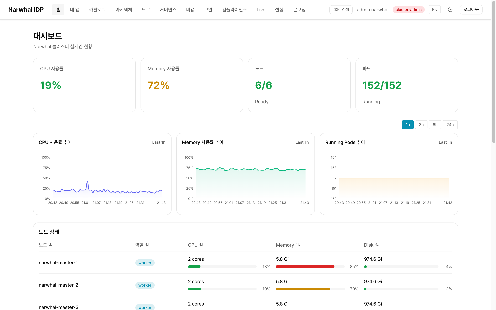

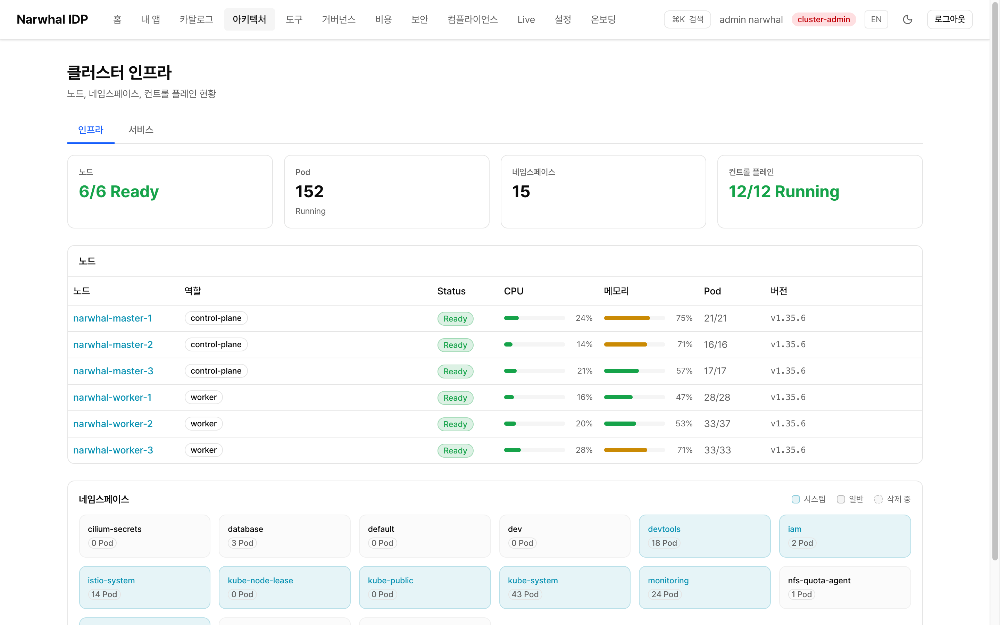
출처: dasomel/narwhal-portal docs/images
Narwhal Portal 화면 (2): 카탈로그 · 비용 · 보안 · 거버넌스
운영자와 개발자가 같은 플랫폼 개념으로 본다 — 클릭하면 확대


출처: dasomel/narwhal-portal docs/images
설계 원칙 4가지, 그리고 지금의 상태
최신 릴리스 Portal v1.1.2 (2026-10-26) · 저장소는 narwhal의 portal/로 이동 (dasomel/narwhal-portal은 archived)
원천 시스템이 계속 authoritative — 상태를 복제하지 않는다
플랫폼 용어로 묶기 — Application, Node, Catalog 등
운영 경계를 UI에 노출 — 권한 · 인증서 · 정책 위반
개발자 + 운영자 경험의 결합 — Day-0부터 Day-2까지
- production에서 Architecture > 클러스터 인프라가 노드 · Pod · 네임스페이스 0으로 보이던 버그 수정 (narwhal#475)
- zod · undici 보안 권고 대응 (narwhal#471)
- 알려진 이슈: body-parser · fast-uri는 후속 패치 예정 (narwhal#470)
ClusterDeck: 자주 재생성되는 환경에 안정적으로 접속
IP 대신 Profile 이름을 유지하고, 접속 경로 정리를 하나의 macOS 데스크톱 UX로
로컬 VM·Kubernetes 환경을 자주 만들고 지우면 IP가 바뀌고 SSH alias, Bastion/ProxyJump, 원격 kubeconfig, context 이름을 매번 수동으로 다시 연결해야 한다.
host discovery → SSH bootstrap → alias/ProxyJump → kubeconfig fetch/normalize → connectivity check를 Profile 중심 흐름으로 묶는다.
관리 콘솔이 아니라 원격 환경을 발견해 접속 가능하게 만드는 workstation access layer.
ClusterDeck 아키텍처: Rust 보안 경계 + 네이티브 OpenSSH
자체 SSH stack을 만들지 않고, ClusterDeck이 소유한 파일만 건드린다
ClusterDeck 화면: Profile · Host · kubeconfig
v0.5.0 (2026-10-26) · Unsigned build(ad-hoc, Developer ID 없음) · 클릭하면 확대

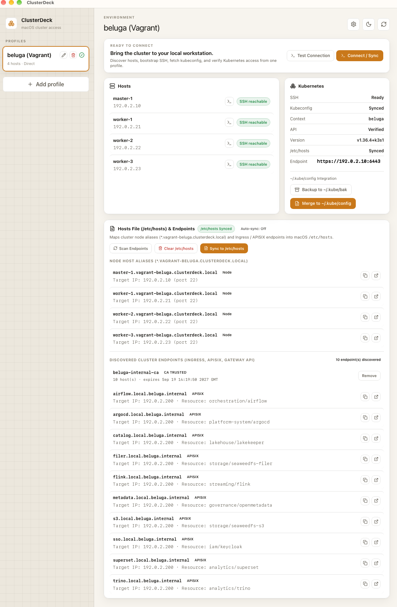

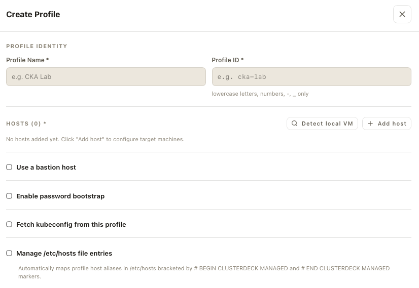

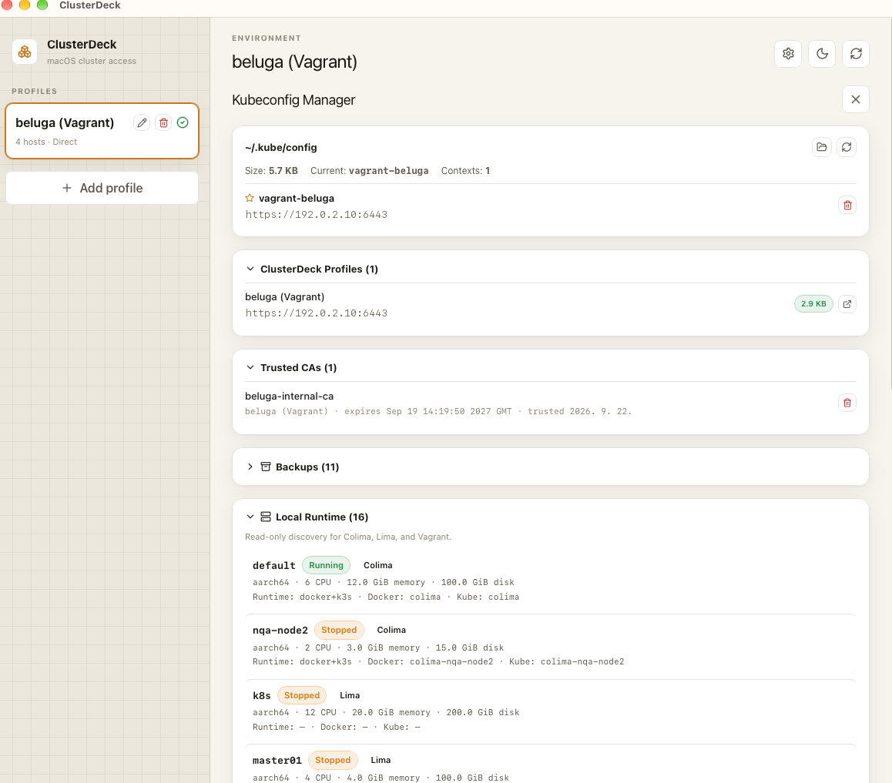
출처: dasomel/clusterdeck 앱 캡처
여섯 프로젝트가 하나의 생태계가 되는 방식
각 프로젝트 문서의 '프로젝트 관계' 절을 한 장에 합친 지도 (KubeMetal은 점선 — 관련 프로젝트)
OpenForge: 설명과 구현이 어긋나지 않게 하는 체계
템플릿 모음에서 출발해 Blueprint + Standards + Evidence 기반 운영 모델 + Portfolio Control Plane으로
OSS가 늘수록 repository별 문서 · CI · 보안 · Agent 지침 · 릴리스 · 유지보수 상태가 다르게 진화해 설명과 구현, 검증 근거가 어긋난다.
공통 Standards · Templates + executable audit + evidence-driven agent workflow + lifecycle registry로 engineering intent를 재현·검증·리뷰 가능한 시스템으로 운영.
코드가 생성됐거나 merge됐다는 사실을 완료로 보지 않는다. 의도한 경계에서 실제로 동작하고, 적절한 evidence로 검증되고, release·rollback 영향까지 이해됐을 때 완료.
OpenForge는 각 프로젝트의 실제 경계에 맞춰 적용된다
허브가 모든 프로젝트를 대신하지 않는다 — 각 repository가 자신의 code와 evidence를 소유
규칙을 '문서'와 '실행'으로 분리한다
영향이 큰 변경(Class C/D)은 review-gated Change Package를 먼저 거친다
증거 등급을 구분하고, 낮은 등급이 높은 주장을 못 하게 한다
Rust CLI openforge assess — L1 Repository · L2 Execution · L3 Runtime
Agent Execution Security: 도구를 고를 수 있다 ≠ 실행해도 된다
승인하는 것은 자연어 의도가 아니라 '실제로 실행될 resolved invocation'
Narwhal Portal — node Auto-Fix: server가 target/argument를 resolve하고 digest 승인, 실행 직전 actor·digest·expiry·replay 재검사
KubeMetal — 아직 없는 L3 실행을 위해 authority ceiling 계약부터 선행
Beluga — read-only 진단 PoC, 위험 class 3종은 승인 메타데이터가 있어도 차단
kube-ready-box — RuntimeClass YAML 존재와 실제 sandbox 실행을 declared → supported → effective → verified로 분리
Agent가 없는 프로젝트(nfs-quota-agent · LDAPium · ClusterDeck)에는 Agent를 새로 넣지 않고 reduced profile만 정의
Portfolio Control Plane: merge ≠ 완료
각 repository가 검증한 상태를 publication 계약으로 올리고, OpenForge는 commit 수로 추측하지 않는다
레지스트리 스냅샷 2026-09-24 기준 (cne.io.kr/oss 대시보드, 2026-10-23 캡처). 대시보드는 development status · adoption · maintenance lifecycle · blast radius · exit-path readiness까지 표현한다.
대시보드 KPI 3개: 무엇을 세고, 분모와 목표는 무엇인가
레지스트리 스냅샷 2026-09-24 (portfolio/dashboard.json) 기준
프로젝트
- 무엇을
- 유지보수 책임자가 지정된 등록 프로젝트 수 (owned_projects) — 11 활성 · 2 유지보수
- 분모
- 개수 지표라 없음 (unowned 0 → 13/13)
- 목표
- 수치 목표 없음 · 책임 공백 0이 기준
- 출처
- portfolio/dashboard.json maintenance.summary
표준 성숙도
- 무엇을
- OpenForge 저장소 자신이 35개 지표 중 적용 가능한 32개에서 받은 점수 (지표당 0/1/2점, N/A 제외)
- 분모
- 적용 지표 × 2점 = 64 → 62/64
- 해석
- 90% 이상 = Production-ready OSS foundation (참고 기준)
- 출처
- docs/portfolio-scorecard.md · reference-metrics.md §3 · audit-portfolio.py (획득/가능×100)
도입률
- 무엇을
- 포트폴리오가 OpenForge 표준을 도입한 정도 — Wave 1 포트폴리오 감사 결과 (commit 4ec3c6a, 2026-08-28)
- 분모
- 감사 14개 저장소의 적용 지표 배점 합 900점 중 554점 → 554/900 = 61.6% (Σ획득/Σ가능, 저장소별 %의 평균이 아님)
- 목표
- 70.0% (Milestone M2)
- 출처
- audit-portfolio.py L1198-1200 · portfolio-scorecard.md @4ec3c6a → projects.json → dashboard.json
참고: 이후 Wave 2 감사(1cedef8)는 70.6%로 M2 목표를 넘었지만, 대시보드 스냅샷(2026-09-24)은 아직 재생성 전이라 61.6%를 게시 중이다 (별개 수치, IMPLEMENTATION-STATUS L50).
외부 개발자의 디자인 기여가 실제 대시보드로 이어졌다
openforge#128 → Figma 참조 설계 → 리뷰 → 라이브 대시보드 (cne.io.kr/ko/oss/dashboard/)
openforge#128 GitHub 캡처: 요청에서 라이브 대시보드까지
issue → 자원 · 배정 → Figma 설계 → 라이브 대시보드 → 감사 인사 · 클릭하면 확대

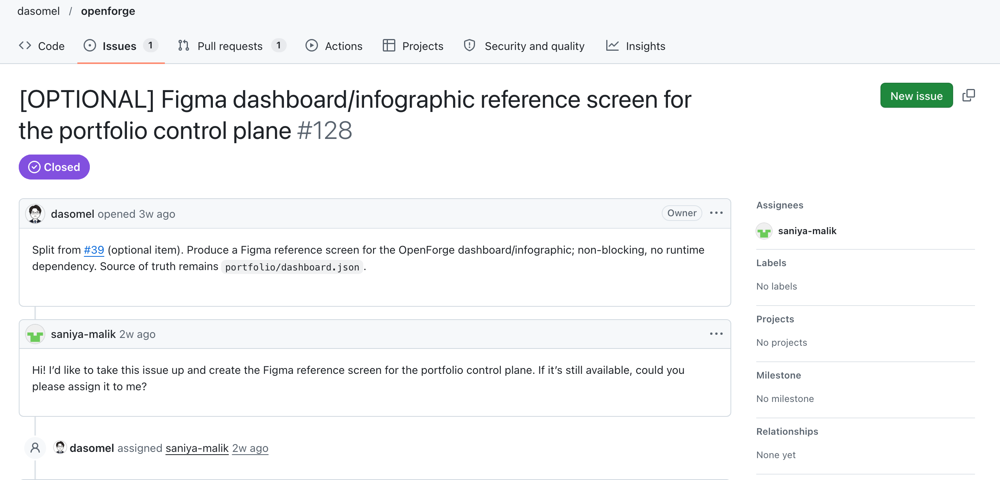

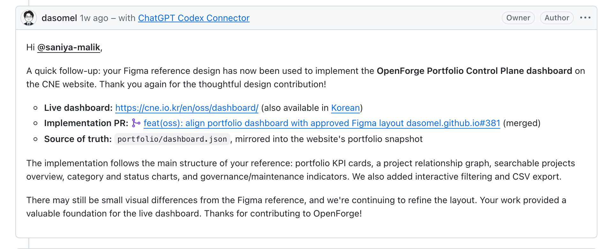

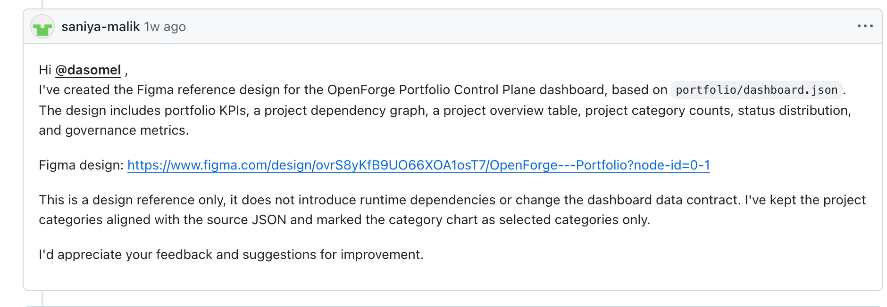

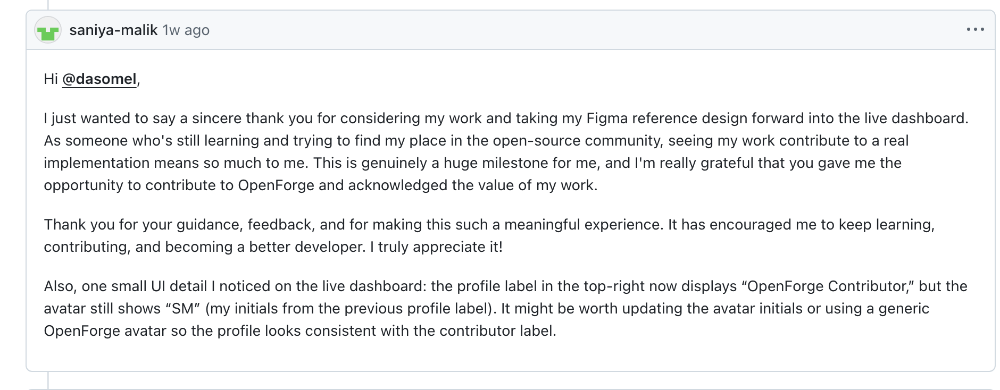
OpenForge 포트폴리오 컨트롤 플레인 (cne.io.kr/oss)
레지스트리 스냅샷 2026-09-24 기준 · 클릭하면 확대

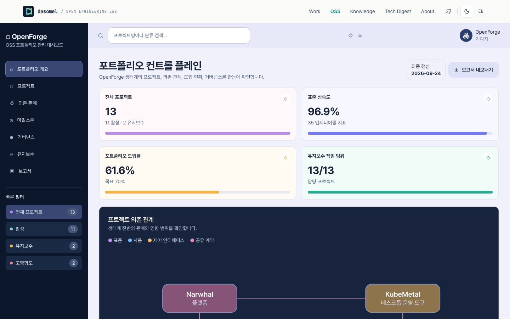

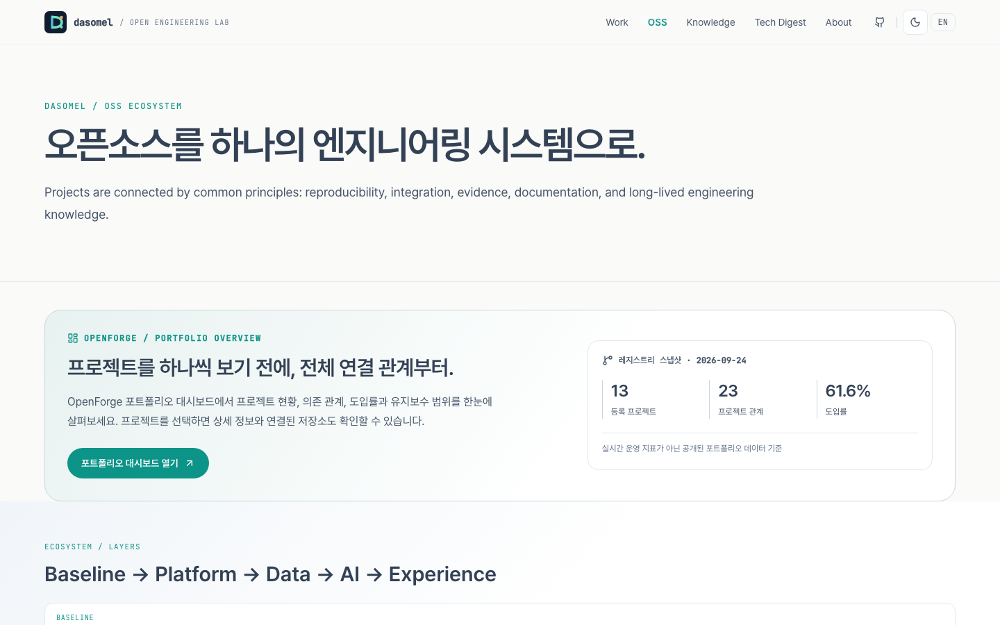
출처: cne.io.kr/oss 라이브 캡처 2026-10-23 · 레지스트리 스냅샷 2026-09-24 기준
프로젝트 의존 관계 그래프와 프로젝트 목록
표준 · 사용 · 제어 인터페이스 · 공유 계약 — 레지스트리 스냅샷 2026-09-24 기준 · 클릭하면 확대

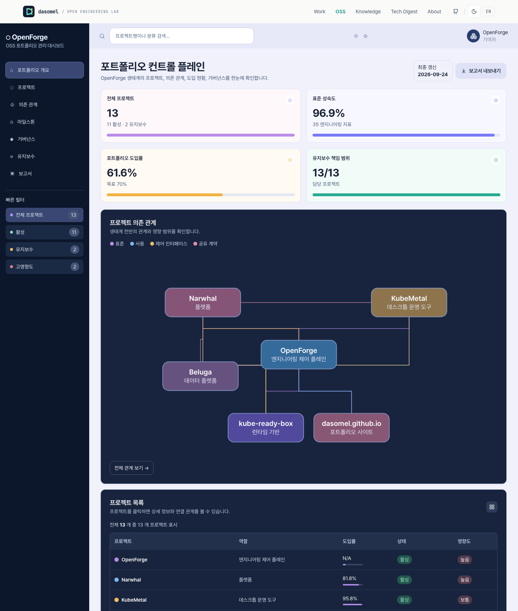
그래프는 Narwhal · KubeMetal · Beluga · kube-ready-box · OpenForge 등의 관계를 표준 / 사용 / 제어 인터페이스 / 공유 계약으로 구분해 보여준다.
프로젝트 목록은 역할 · 도입률 · 상태 · 영향도를 함께 표시한다 (예: Narwhal 81.8%, KubeMetal 95.8%).
출처: cne.io.kr/oss 라이브 캡처 2026-10-23
외부 개발자와의 논의: 누가 어느 저장소에서 무엇을
디자인 기여, 설계 논의, 제안, 버그 제보가 여러 저장소에서 오가고 있다
설계 논의 캡처: agent 실행 경계에 대한 외부 의견
narwhal#73 · #155 · #372 — 클릭하면 확대 (본문은 짧게만 인용하고 원문은 링크)

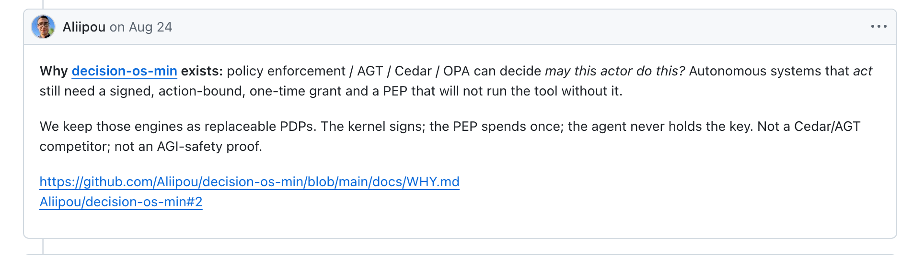

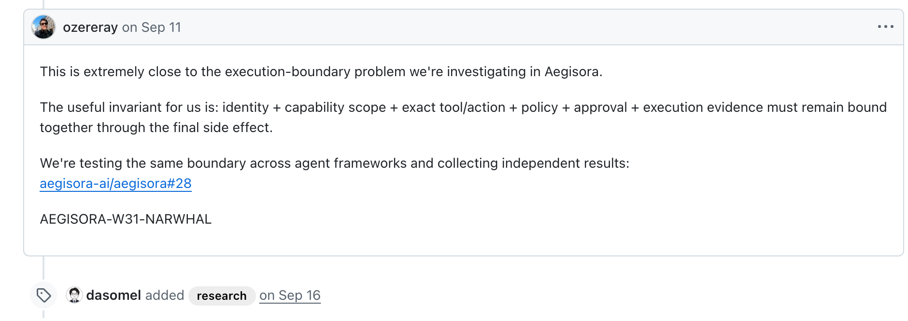

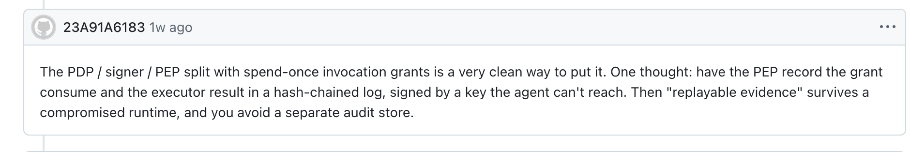

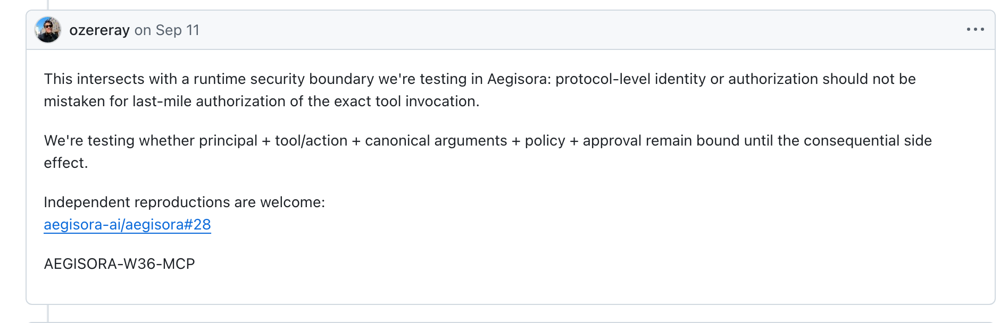
사용자 · 기여 캡처: 지원 제안, 버그 제보, 문서 기여
kubemetal#84 · kube-ready-box#79 · narwhal PR #4 — 클릭하면 확대

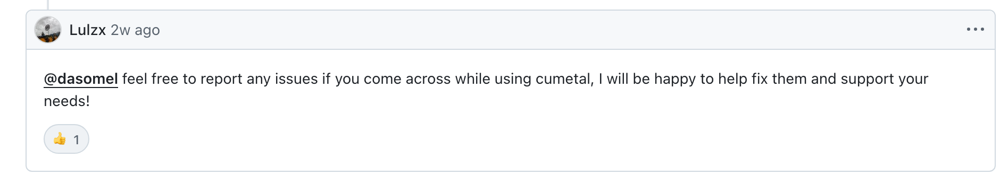

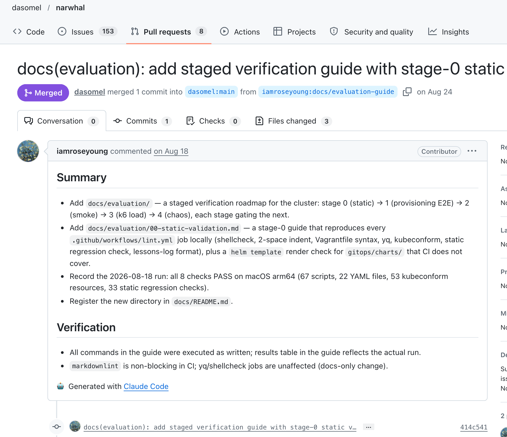

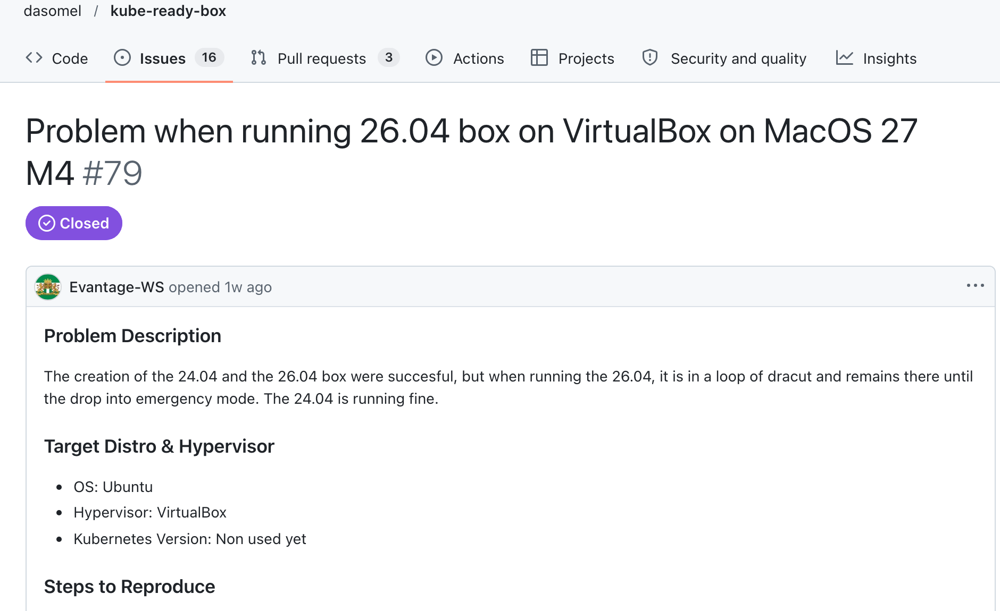
kube-ready-box#79: 버그 제보 한 건이 템플릿 수정으로
2026-10-18 제보 → 10-26 종료 (8일) · 첫 응답은 제보 4일 뒤였다
논의가 설계로 이어진 사례, 그리고 아직 열려 있는 것
건전한 생태계가 만들어지는 중 — 과장하지 않고 상태를 그대로
- Aliipou의 spend-once 제안은 OpenForge 공통 계약(ADR-0013)까지 반영됐다
- 디자인 기여는 라이브 대시보드가 됐다 (openforge#128)
- 사용자 버그 제보가 8일 만에 재현 · 우회 · 종료, 템플릿 수정 PR #80으로 이어졌다 (PR은 아직 open)
- 대부분의 설계 이슈가 아직 open
- 일부 의견은 각자 프로젝트와 연결된 소개 성격 — 채택 · 협업 확정은 아님
AI 에이전트 팀은 어떻게 일하는가
사람이 목표를 정하고, 오케스트레이터가 나눠 주고, 결과는 모두 되돌아온다
하루의 실제 흐름: narwhal v1.3.0 릴리스 직후
2026-10-22~23 · 공개 GitHub에서 확인되는 흐름 — dasomel.github.io PR #408
시행착오: '초록불'이 거짓말을 한 순간들
모두 프로젝트 문서와 글에 기록된 실제 사례
가장 아팠던 실패: PASS인데 ArgoCD 앱이 0개였다
검사는 거짓말을 하지 않았다 — 응시자가 0명이면 '전원 합격'은 참이다
교훈: 네 문장으로 줄이면
AI의 속도를 쓰면서 신뢰성을 지키는 기준
구현 능력은 실행 권한이 아니다
Implementation capability is not execution authority.
완료 주장은 증거가 아니다
A completion claim is not evidence.
낮은 증거 등급은 더 강한 runtime 성질을 주장하지 못한다
A lower evidence class must not claim a stronger runtime property.
merge된 코드는 검증된 상태가 게시되기 전까지 포트폴리오 완료가 아니다
Merged code is not portfolio completion until verified state is published.
에이전트가 구현을 맡을수록, 사람이 쥘 것의 위치가 바뀐다
사람의 책임이 없어지는 게 아니라 이동한다
KubeMetal: control plane은 VM, GPU 연산은 macOS host
Apple Silicon에서 Kubernetes control plane과 macOS MLX compute를 결합하는 하이브리드 MLOps 데스크톱 앱

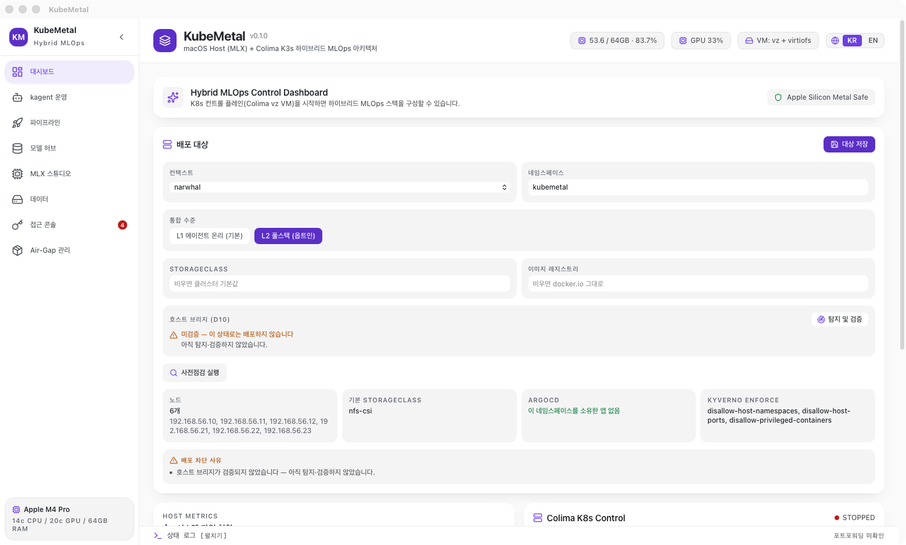
출처: dasomel/kubemetal 앱 캡처 · 클릭하면 확대
KubeMetal의 구현 코드가 XERJ Corpus Hub의 AI 에이전트 참조 소스로 소개되었다
AI 에이전트와 쓴 코드가 다른 AI 에이전트의 참조 지식이 되는 순환 (2026-10-22)
수록은 참고 사례로 제공된다는 뜻일 뿐, 프로젝트 전체의 품질 인증이나 공식 표준 채택이 아니다. 격리 효과·성능은 별도 검증이 필요하다.
XERJ Hub contributor 페이지에 소개된 KubeMetal
hub.xerj.org/contributors/dasomel — 2026-10-23 캡처 · 클릭하면 확대

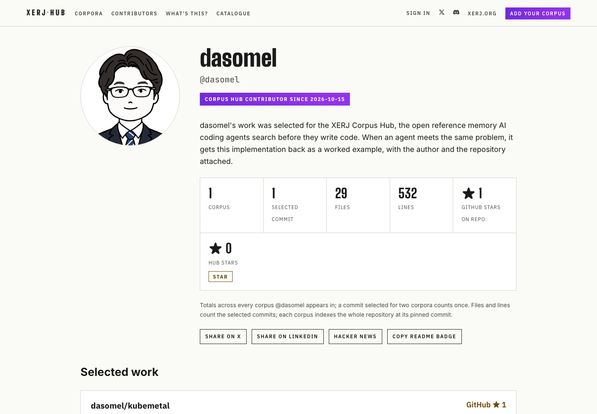
- Corpus Hub contributor since 2026-10-15
- 1 corpus · 29 files · 532 lines
- Selected work: dasomel/kubemetal
- 코딩 에이전트가 코드 작성 전에 검색하는 오픈 참조 메모리로 소개된다
수록은 참고 사례로 제공된다는 뜻일 뿐, 품질 인증이나 공식 표준 채택이 아니다.
출처: hub.xerj.org/contributors/dasomel 캡처 2026-10-23
정리: 수직으로 잇고, 증거로 검증한다
개별 OSS를 넘어 플랫폼 생명주기의 핵심 영역을 하나의 검증 가능한 체계로
잇기 — Day-0 Kube-Ready-Box → Day-0~2 Narwhal → Day-2 NFS Quota Agent · Portal · ClusterDeck
검증하기 — 장애는 회귀 검증으로, 에이전트의 실행은 resolved invocation 승인으로, 완료는 증거와 게시된 상태로
남기기 — 모델은 바뀌어도 규칙 · 아키텍처 · 테스트 · 운영 지식은 repository에, 그 코드는 다시 다른 에이전트의 참조 지식으로
단순 코드 생성이 아니라, 검증 가능한 엔지니어링 체계.
관련 링크 · 질문
QR로 바로 열기 — 발표 자료와 프로젝트는 모두 공개되어 있습니다
Narwhal · github.com/dasomel/narwhal
OpenForge · github.com/dasomel/openforge
GitHub github.com/dasomel · LinkedIn linkedin.com/in/ba909924 · cne.io.kr
질문 · 이슈는 GitHub Issues로 환영합니다.